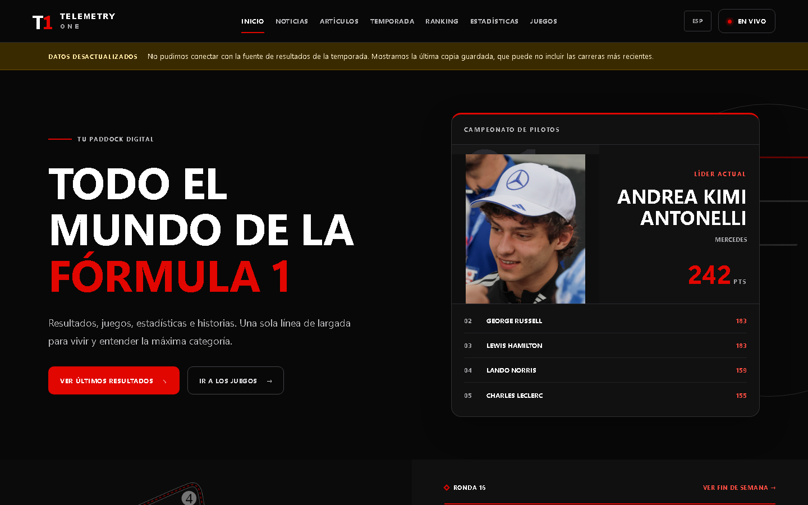
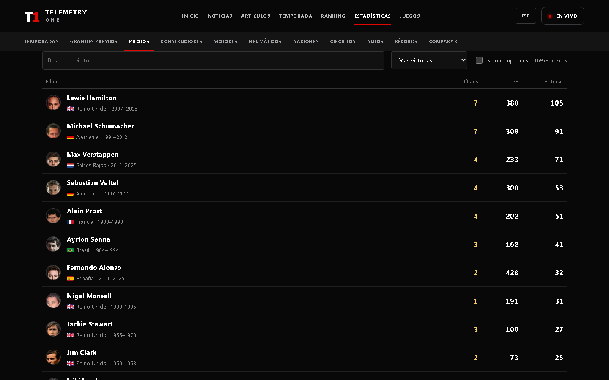
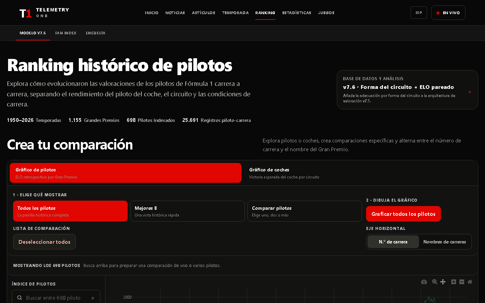

De varios experimentos a un ecosistema navegable.
Mi interés por el automovilismo se convirtió en un producto digital propio: Telemetry 1 reúne actualidad, resultados, perfiles, historia, modelos analíticos y juegos dentro de una experiencia común. El desafío fue transformar años de curiosidad, datos y experimentos en un ecosistema que invita a explorar la Fórmula 1 desde distintos ángulos.

La información existía. Lo que faltaba era una forma de recorrerla.
Los resultados recientes, el archivo histórico, el ranking retrospectivo y los juegos habían nacido como proyectos distintos. Unirlos no consistía en pegarlos dentro de una home: había que resolver escalas temporales, fuentes y comportamientos diferentes sin confundir al visitante.
La temporada como punto de entrada
Calendario, resultados y posiciones permiten seguir el presente y abrir rutas naturales hacia pilotos, equipos y carreras relacionadas.
76 temporadas conectadas
Temporadas, carreras, pilotos, constructores, motores, neumáticos, circuitos y autos se generan desde snapshots identificables y forman una red histórica navegable.
Comparar más allá del resultado
El ranking v7.6 y las probabilidades esperadas agregan una capa analítica para explorar rendimiento, contexto y trayectorias entre épocas.
Una entrada común, varias profundidades.
La navegación principal responde a intenciones distintas: seguir la temporada, consultar una entidad, comparar trayectorias, leer una historia o jugar. Dentro del archivo, una segunda capa permite moverse por temporadas, Grandes Premios, pilotos, constructores, motores, neumáticos, naciones, circuitos, autos y récords.
Datos que conservan su significado
La interfaz distingue resultados confirmados, información disponible y salidas de modelos. Esa decisión hace que una base de datos extensa siga siendo legible y permite comparar sin perder el contexto de cada cifra.
Enlaces como parte del modelo
Las páginas no son fichas aisladas. Una carrera enlaza temporada y participantes; un chasis enlaza los años en que aparece; un piloto conecta resultados oficiales con la serie analítica que lo representa.

Generar, verificar y después presentar.
Normalizar fuentes
F1DB alimenta el archivo histórico; otras fuentes se usan con atribución para información y material que el dataset base no contiene.
Construir snapshots
Scripts separados generan historia, fines de semana, neumáticos, récords y artículos. El sitio no recalcula modelos analíticos durante una visita.
Verificar invariantes
Las tareas de validación comprueban totales, enlaces, casos históricos especiales, reglas de poles y cobertura del modelo antes de publicar.
Servir con Next.js
Las rutas dinámicas leen artefactos versionados y los convierten en páginas rápidas, enlazables y aptas para buscadores.

El modelo no es decoración.
La experiencia de ranking permite elegir una versión ya calculada, comparar pilotos o autos y cambiar el eje entre número de carrera y nombre del Gran Premio. Los detalles de cada punto incluyen contexto de la prueba y variables del modelo.
La separación entre estadísticas oficiales y resultados analíticos evita una lectura equivocada: títulos, victorias y clasificaciones pertenecen al archivo; ELO, xP y expectativa de victoria pertenecen al modelo y se etiquetan como tales.
El portal también admite productos independientes
Los juegos y Predestinato se despliegan en repositorios propios. Telemetry 1 los incorpora como destinos consistentes, sin acoplar su ciclo de desarrollo al de la enciclopedia.
Un proyecto personal que reúne producto, datos y creatividad.
- Diseño de producto: convertí necesidades distintas —seguir, consultar, comparar, leer y jugar— en recorridos coherentes dentro de una misma interfaz.
- Arquitectura de datos: organicé fuentes actuales, snapshots históricos y resultados analíticos para que cada capa mantenga su contexto.
- Visualización: rankings, perfiles y comparadores traducen modelos complejos en herramientas que se pueden explorar sin conocer su implementación.
- Construcción de ecosistema: Telemetry 1 conecta enciclopedia, análisis y juegos independientes, y puede incorporar nuevos experimentos sin perder identidad.